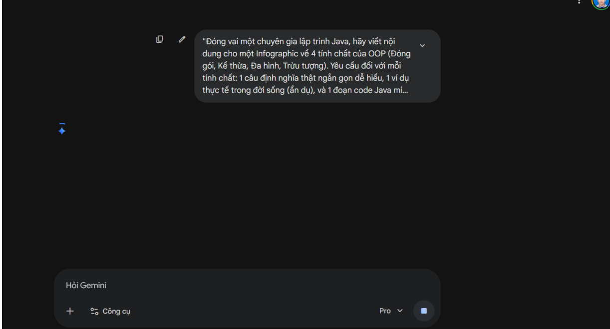
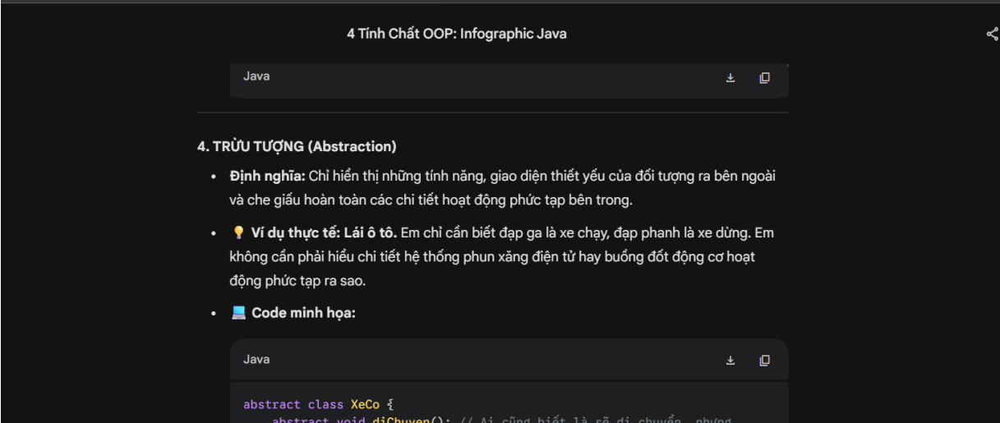
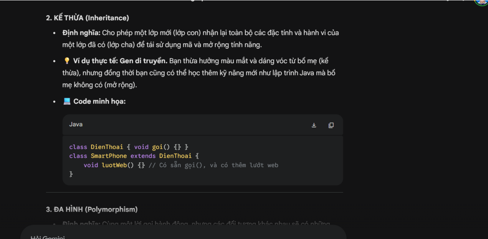
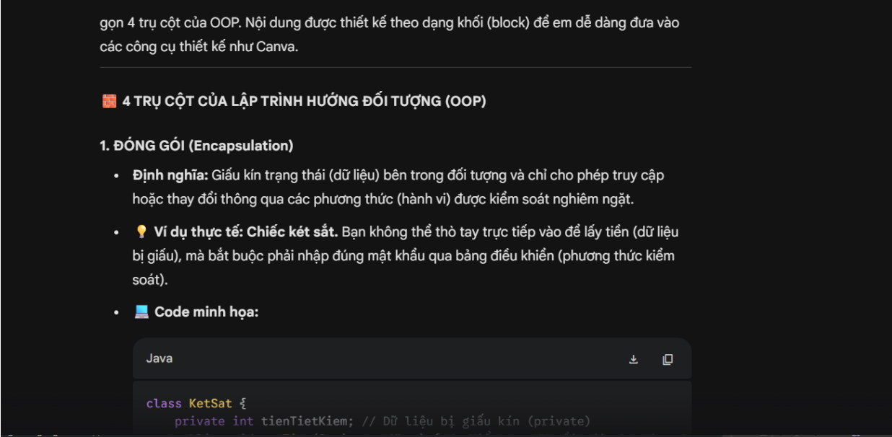
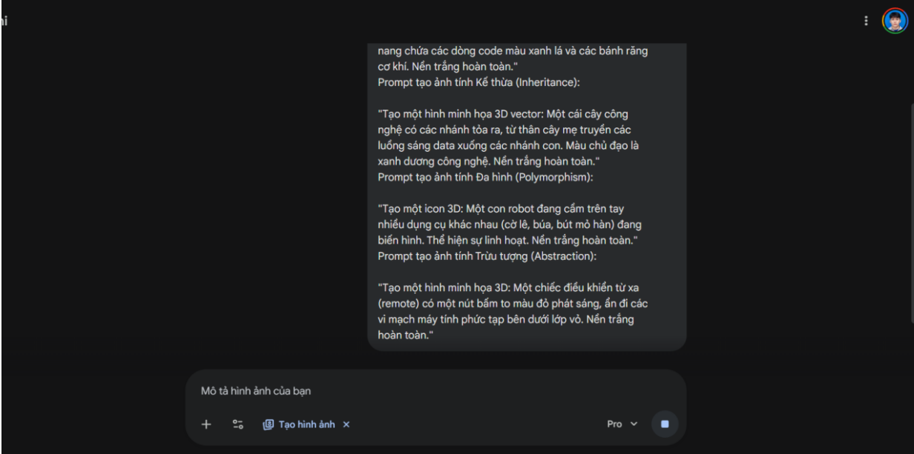

1. Prompt Tạo Nội Dung Infographic
"Đóng vai một chuyên gia lập trình Java, hãy viết nội dung cho một Infographic về 4 tính chất của OOP (Đóng gói, Kế thừa, Đa hình, Trừu tượng). Yêu cầu đối với mỗi tính chất: 1 câu định nghĩa thật ngắn gọn dễ hiểu, 1 ví dụ thực tế trong đời sống (ẩn dụ), và 1 đoạn code Java minh họa siêu ngắn (tối đa 3-4 dòng)."
2. Prompt Tạo Ảnh (Image Generation)
• Tính Đóng gói (Encapsulation):
"Tạo một hình minh họa 3D phong cách hiện đại: Một viên nang thuốc (capsule) trong suốt, bên trong viên nang chứa các dòng code màu xanh lá và các bánh răng cơ khí. Nền trắng hoàn toàn."
• Tính Kế thừa (Inheritance):
"Tạo một hình minh họa 3D vector: Một cái cây công nghệ có các nhánh tỏa ra, từ thân cây mẹ truyền các luồng sáng data xuống các nhánh con. Màu chủ đạo là xanh dương công nghệ. Nền trắng hoàn toàn."
• Tính Đa hình (Polymorphism):
"Tạo một icon 3D: Một con robot đang cầm trên tay nhiều dụng cụ khác nhau (cờ lê, búa, bút mỏ hàn) đang biến hình. Thể hiện sự linh hoạt. Nền trắng hoàn toàn."
• Tính Trừu tượng (Abstraction):
"Tạo một hình minh họa 3D: Một chiếc điều khiển từ xa (remote) có một nút bấm to màu đỏ phát sáng, ẩn đi các vi mạch máy tính phức tạp bên dưới lớp vỏ. Nền trắng hoàn toàn."





3. Quá trình thiết kế & Kết quả
Kết quả sơ bộ: Xem các hình minh họa được render bằng công cụ tạo ảnh AI từ các prompt phía trên trong file đính kèm.
Với Canva: Sử dụng các dữ liệu văn bản từ ChatGPT và hình ảnh minh họa từ Midjourney/DALL-E, kết hợp lại trên Canva để thiết kế bố cục Infographic cuối cùng.
Kết quả cuối cùng: Vui lòng xem chi tiết Infographic hoàn thiện trong file Google Docs được đính kèm ở nút "Link bài tập" phía trên.